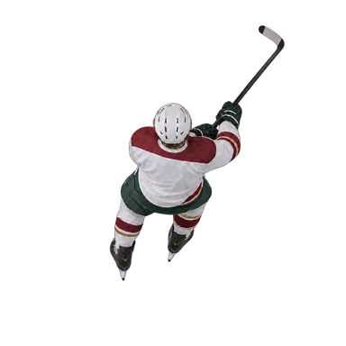

KAMPKONTROL · OVERBLIK
Kampkontrol
Start en konkurrence, følg afviklingen og gør publikum klar til næste pausespil.
AKTUEL KONKURRENCE
Bulldogs mod Herning, 1. pause

Spil
Hold pucken i liveOdense Bulldogs mod Herning Blue Fox
Tid tilbage
02:14
- Start
- 19:42
- Slutfløjt
- 19:45
- Deltagere med resultat
- 248
NÆSTE KONKURRENCE
Bulldogs mod Herning, 2. pause
- Spil
- Hold pucken i live
- Start
- Fre. 31. okt. kl. 20.25
- Varighed
- 3 min.
SENESTE RESULTAT
Bulldogs mod Esbjerg, 2. pause
Vinder
BulldogsFan78 41,26 point- Dato
- 24. okt. 2026
- Deltagere
- 212
Når der ikke er noget at vise
Ingen planlagte
Der er ingen kommende konkurrencer.